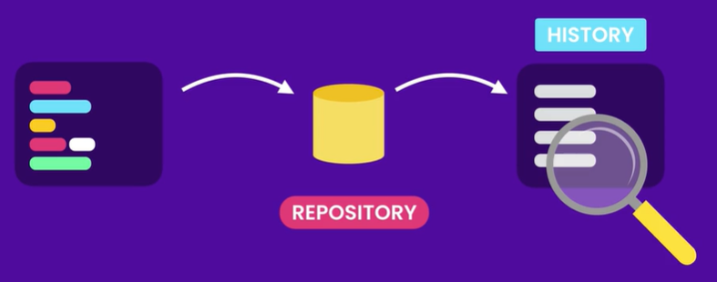

Git is a version control system. A version control system records the changes made to the project's code over time in a special database called a repository. We can then look at the database and see who's made changes and when. This way, if we made a mistake we can easily go back to a previous state.
Version control systems can be classified into two categories: Centralized and Distributed. In a centralized system, all team members connect to a central server to get and share code. The problem with these systems is that if the server goes down, we can't save snapshots. In distributed systems, every member of the team has a copy of the entire project on their machine. Git is a distributed control system.